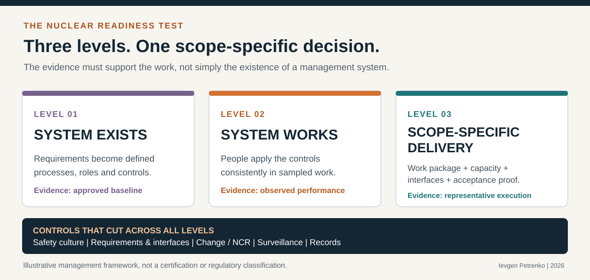

For a company entering the nuclear supply chain, a successful audit is an important milestone. A robust nuclear quality management system, qualified personnel and verifiable controls are not optional where required. They provide the basis for confidence in products and services whose failure could affect safety.
Yet a positive audit conclusion is not necessarily a complete answer to a different question: Can this organisation deliver the specific nuclear scope, at the required pace, while controlling interfaces, changes, subcontractors, acceptance criteria and records?
This is not an argument against audits. It is an argument for connecting assurance to actual delivery conditions.
Executive summary
- Audit evidence has a defined scope. Read its conclusion alongside what was sampled, at what facility, with which personnel and against which requirements.
- Delivery capability is scope-specific. One successful demonstration does not prove capacity for larger volumes, unfamiliar interfaces or a compressed schedule.
- Readiness requires an accountable decision. The purchaser, EPC and supplier must know who can release work, which gaps must close first and how performance will be monitored.
1. The distinction is about scope, not whether audits are useful
A professionally performed supplier audit is not simply a documentation review. Depending on its scope and criteria, it can examine work in progress, competence, procurement flow-down, design control, inspections, nonconformance management and the effectiveness of corrective actions. It can uncover practical weaknesses and provide substantial evidence of implementation.
But an audit has boundaries: defined criteria, sampled activities, an assessment period and a scope of supply. A company may demonstrate compliance with applicable requirements and still face execution risks in a new or larger work package, a different facility, a changed supply chain or an unfamiliar contract.
Where a suitably scoped supplier audit already covers execution capability, there is no value in duplicating it. Where material gaps remain, a targeted readiness review, witnessed demonstration or representative work-package test can close those gaps within the existing supplier qualification and oversight arrangements.
2. Start with the applicable nuclear requirements
Nuclear projects do not use a single universal quality standard. The applicable framework flows from legislation, the licensing and design basis, codes and standards, the procurement specification and contractual commitments. ASME NQA-1, ISO 19443 and the CSA N299 series serve different assurance contexts and should not be treated as interchangeable. Neither certification nor an audit under one framework automatically establishes conformity to another.
For example, ASME NQA-1 addresses quality assurance requirements for nuclear facility applications. ISO 19443 extends ISO 9001 requirements for organisations providing products and services important to nuclear safety. The CSA N299 series defines categories of supplier quality assurance programme requirements in the Canadian context. Their practical relevance depends on what the project has actually invoked.
IAEA GSR Part 2 provides a wider management-for-safety perspective, including competence, a graded approach, supply-chain management, safety culture, assessment and improvement. These are useful principles for a delivery-readiness discussion, but a project must still establish its specific binding requirements.
A graded approach is essential. Assessment depth should reflect the safety significance, technical novelty, complexity, supplier history, consequence of failure and contractual risk of the assigned work. It should not impose the same assurance burden on every purchase or service.
3. Three levels of demonstrated capability
The following three-level model is a practical assessment framework, not a new standard, certificate or regulatory classification. It provides a common language for procurement, engineering, construction and quality teams to discuss supplier readiness.
System exists
Applicable requirements are translated into controlled processes, responsibilities, competence requirements and planned verification.
Typical evidence: approved procedures, a requirements matrix, training and qualification criteria, procurement controls.
System works
People understand and consistently apply the controls in sampled real activities, and deviations generate appropriate investigation and action.
Typical evidence: witnessed work, interviews, inspection results, traceability, NCR and CAPA effectiveness.
Delivery capability demonstrated for a defined scope
Engineering, procurement, resources, interfaces, subcontractors, execution, verification and records work together for the proposed package.
Typical evidence: representative package, capacity assessment, owned interfaces, acceptance dossier and release criteria.
These levels are cumulative, not alternative paths. A documented system without effective implementation is weak. Effective implementation without adequate capacity or control of the proposed scope leaves delivery risk unresolved.

A successful representative package is evidence, not a capacity guarantee. Readiness must be bounded by the actual work scope, location, equipment, qualified personnel, production rate, subcontractors, interfaces and execution conditions. A change to any of these assumptions can trigger reassessment. Level 3 is sustained through performance, not permanently awarded at contract signature.
4. Test a vertical slice, not a collection of isolated documents
A particularly informative assessment technique is to trace one real or representative work package through its full sequence. For new entrants, a controlled demonstration or previously executed comparable package can be used before actual safety-significant execution. The objective is to expose where requirements, decisions and evidence may be lost between organisations.
The sequence is illustrative. Mandatory hold points, independence, approvals, inspections and record obligations must follow the invoked code, specification and approved arrangements.
An illustrative test: a welded assembly for a system important to safety
Take a fabricated welded assembly intended for a system classified as important to safety. The example is deliberately generic: the applicable design and construction code, inspection regime and acceptance criteria depend on the item's classification, jurisdiction and contract. A useful vertical-slice demonstration would trace:
- Design authority and requirement: agreed design basis, applicable code edition, classification, approved drawings, tolerances and current revision are identified before fabrication planning.
- Purchase order and sub-tier flow-down: material specification, reporting obligations, surveillance rights and deliverable documentation reach every relevant supplier.
- Materials and fabrication: incoming material identity and certificates can be connected to the correct item and heat or batch, with suitably qualified procedures and personnel where required.
- Inspection and testing: the approved inspection and test plan identifies required hold and witness points, qualified inspection personnel, appropriate equipment controls and evidence of acceptance.
- Changes and deviations: substitutions, drawing changes and nonconformances are assessed and dispositioned by the authorised roles before affected work proceeds or is released.
- Acceptance and lifetime records: the final record set supports item identity, applicable revision, technical compliance, acceptance decision, traceability and handover obligations.
A vertical slice can reveal a gap that functional checklists miss: for example, a technically satisfactory weld supported by a material record that cannot be connected to the installed item, or a changed drawing that was not communicated to the sub-tier fabricator. Either can create re-verification, rework, acceptance or installation risk.
The purpose is not to prescribe welding activities or substitute for the applicable code. It is to see whether work execution and acceptance evidence survive the passage between engineering, supply chain, production, inspection and the receiving organisation.
If the material is correct but its origin cannot be demonstrated, if a drawing revision was not transmitted to a subcontractor, or if a nonconformance was closed without the necessary technical disposition, the issue is not merely administrative. Acceptance and subsequent use may require investigation, additional verification, rework or other authorised disposition.
5. The assessment must look beyond the quality department
A delivery-readiness review should integrate engineering, procurement, operations, construction, quality, project controls and management. Nuclear safety and contractual compliance cannot be assigned to a single function after the work has already been organised.
| Domain | Practical test | Evidence to examine |
|---|---|---|
| Requirements & interfaces | Does the current requirement reach the correct decision owner and work instruction? | Traceability, design revision status, interface register, approved specifications. |
| Competence & safety culture | Can individuals perform the assigned task and challenge unsafe or unclear instructions? | Role-specific qualifications, observation, interviews, stop-work expectations, reporting behaviour. |
| Supply chain & capacity | Are sub-tier controls and resources sufficient for the proposed scope and schedule? | Supplier evaluations, commitments, workload, make/buy boundaries, procurement records. |
| Execution & verification | Can teams demonstrate use of approved instructions, inspection points and acceptance criteria? | Work packages, checklists, test data, calibrated equipment, inspection and release records. |
| Change & nonconformance | Are technical decisions and dispositions authorised and communicated before affected work proceeds? | Change logs, NCR, corrective actions, effectiveness checks, configuration baseline. |
| Evidence & handover | Can records be linked to the correct item, work scope, revision and acceptance decision? | Traceable records, data books, document indexes, review approvals, retention arrangements. |
The table is a starting point. A software, civil works, instrumentation, laboratory or heavy manufacturing contract will require a different technical sample and different competence checks. The important point is to test the assigned work, rather than scoring the organisation against an abstract ideal.
Capability and capacity are not the same test
A successful prototype, first article or sample package shows something important about technical capability. Delivery capacity asks a different question. Can the company repeat that performance across the contracted volume, shifts and milestones without losing qualified staff, access to specialised equipment, independent inspections or control of sub-tier suppliers?
Capacity evidence may include a resource-loaded production plan, validated lead times, competing orders, long-lead materials, skill coverage, contingency for rework and realistic turnover-documentation throughput. Evidence must be proportionate to the scope and risks; it need not become an unmanageable reporting exercise.
6. Turn findings into a defensible readiness decision
The output should be a concise, evidence-based readiness map, not a single overall percentage presented as if it establishes nuclear suitability. It should identify the scoped work, applicable criteria, verified strengths, limitations of the sample, open gaps, consequences, owners, dates and objective evidence required for closure.
Evidence: applicable codes, classification, purchase requirements, approved scope and named interfaces. Decision: the authorised procurement and technical roles confirm the assessment basis.
Evidence: properly scoped audit findings, observed execution, qualified people and representative records. Decision: designated assurance and technical authorities identify proven and unproven capabilities.
Evidence: closed mandatory gaps, approved work documents, realistic capacity, hold points and sub-tier arrangements. Decision: the contractually authorised role releases the specific activity.
Evidence: surveillance results, change and NCR closure, output quality, milestones and handover records. Decision: the responsible roles continue, restrict, pause or requalify as justified.
Three possible outcomes for a defined work package
| Outcome | Meaning | Decision and evidence |
|---|---|---|
| Ready | Relevant mandatory requirements and release criteria have been satisfied. | Record scope, approving authority, evidence reviewed and any continuing surveillance. |
| Ready with defined restrictions | Only specified activity can proceed under documented controls, where permitted by applicable requirements and authorised decision rights. | Identify restricted work, unresolved items, owner, deadline and required evidence before the next release point. |
| Not ready for the defined scope | Material gaps prevent the relevant activity from being released. | Do not commence the affected activity until the mandatory gaps are properly closed and the authorised release is recorded. |
These outcomes are illustrative management labels, not substitutes for required regulatory, code, contractual, QA or technical approvals. A restricted decision can never waive mandatory hold points, code requirements or safety obligations.
Not every finding requires stopping all activity. The proper response depends on safety significance, the applicable requirements, work status and authorised decision rights. Some actions may be closed before procurement, others before fabrication or installation, and some risks may require enhanced surveillance or a controlled restriction. There must be no bypass of mandatory hold points or release criteria.
Who owns the decision?
Readiness can only be managed if responsibility follows the contract and the actual technical authority. The following allocation is illustrative; it must be tailored to the procurement model, licence conditions and delegated decision rights.
| Organisation | Typical responsibility | Critical interface |
|---|---|---|
| Owner / licensee | Establish required outcomes, applicable owner requirements and oversight; retain responsibilities assigned by law and the licensing framework. | Clear acceptance basis, technical authority, owner decisions and requirements flow-down. |
| EPC / integrator | Coordinate allocated design, procurement, construction and supplier interfaces; maintain integration planning and applicable verification arrangements. | Design maturity, change management, work sequencing, release points and turnover integration. |
| Supplier / sub-tier | Demonstrate the capability and resources for its assigned scope; execute controlled work and produce traceable acceptance evidence. | Qualified people, controlled production, supplier oversight, records and timely escalation of deviations. |
A supplier cannot close an interface that the purchaser has failed to define. Nor can an EPC organisation reliably sequence fabrication or installation when design decisions, acceptance criteria or authority boundaries remain unresolved. Readiness is therefore a shared delivery-governance issue, not a quality-department score.
7. The programme-level consequences of an unproven capability
At programme level, supplier readiness is not simply a quality assurance concern. It is an engineering, procurement, construction and integration risk. An unresolved capability gap may affect design interfaces, manufacturing release, inspection, field installation and final acceptance across several organisations.
Consider a hypothetical package in which material identification is lost before manufacturing acceptance. What begins as one supplier's record problem can require engineering review, additional verification, rescheduling of a downstream workface and revision of the project turnover sequence. If the affected item is on a critical path, the consequence can extend beyond that purchase order. The actual impact will depend on the package and recovery options.
That chain matters for schedule credibility as much as for conformity. It is better to uncover limitations before an order is committed or safety-significant execution starts than to discover them after downstream interfaces have been built around an assumption of readiness.
Programme-level test: Can the project demonstrate that each critical handover has a named owner, current technical baseline, defined acceptance evidence and a credible recovery path if an upstream package is restricted?
8. Why this matters to Poland and European nuclear programmes
Industrial participation is an important objective of nuclear new build. But bringing strong conventional engineering and manufacturing companies into the nuclear market requires more than registering them on supplier lists. Projects need a systematic way to identify which capabilities already exist, which require adaptation and how progress will be verified against actual packages of work.
A practical, graded readiness assessment supports this transition without treating every industrial company as if it were a reactor vendor. It can protect schedule by exposing missing interfaces early, support supplier development with clear closure evidence, and reduce the risk that incomplete documentation emerges only during acceptance or handover.
The same approach matters for established suppliers entering new projects or technologies. Prior experience is valuable evidence, but project-specific requirements, design changes and new organisational boundaries still need review. For standardised multi-unit projects and SMR supply chains, repeatability becomes a strategic advantage only if configuration, resources and acceptance evidence remain controlled between successive packages.
Five questions for programme leadership
- What did the audit actually demonstrate for the package we plan to award?
- Which technical, organisational or capacity assumptions remain untested?
- Who owns the design, contract and acceptance interfaces across organisations?
- What objective evidence is required before each authorised release point?
- Which indicators will tell us that supplier capability is deteriorating during delivery?
The purpose is not to add another barrier to the nuclear supply chain. It is to make qualification, execution and acceptance part of one coherent assurance strategy.
Closing perspective: readiness is not a certificate
An audit can be an excellent demonstration of system implementation. It can also identify weaknesses that matter far beyond the quality function. But its conclusions must be read in the light of its actual scope and evidence.
Delivery readiness is a proposition about a defined organisation, a defined work package, a defined set of requirements, resources and interfaces, and a defined point in time. It is strengthened by credible evidence before work starts and confirmed by controlled performance as work proceeds. Where conditions materially change, the readiness conclusion must be revisited.
The question for a nuclear programme is therefore not only: Do we have a procedure, and have we passed the audit?
It is: Can we execute the specified work, manage its interfaces and changes, and demonstrate with reliable evidence that the required acceptance criteria have been met?
That is where nuclear quality assurance becomes a connected part of delivery confidence, alongside engineering, programme governance and clear technical accountability.
Standards, sources and further reading
- International Atomic Energy Agency, Leadership and Management for Safety (GSR Part 2). See requirements concerning graded approach, resources, supply chain, safety culture, assessment and improvement.
- American Society of Mechanical Engineers, NQA-1: Quality Assurance Requirements for Nuclear Facility Applications. Apply the project-invoked edition and requirements.
- International Organization for Standardization, ISO 19443:2018, with Amendment 1:2024, for suppliers of items and services important to nuclear safety. The standard is under revision as of October 2026.
- Canadian Nuclear Safety Commission, Canadian National Report for the Convention on Nuclear Safety, referencing the CSA N299 series of supplier QA standards.
- International Atomic Energy Agency, Industrial Involvement to Support a National Nuclear Power Programme (NG-T-3.4, 2016).
- International Atomic Energy Agency, Nuclear Contracting Toolkit: Supplier Pre-qualification. Discusses technical, organisational and financial capability as well as early identification of risks.
- International Atomic Energy Agency, Procurement Engineering and Supply Chain Guidelines in Support of Operation and Maintenance of Nuclear Facilities (NP-T-3.21, 2016). Primarily addresses operating facilities, with transferable procurement and supply-chain principles; it is not a new-build construction standard.
- Ievgen Petrenko, original LinkedIn discussion: Passing an Audit Does Not, by Itself, Demonstrate Nuclear Delivery Readiness.
This article presents an independent professional interpretation and an illustrative assessment approach. The three-level model, four readiness gates and three illustrative decision labels are not IAEA, ISO, ASME or CSA requirements. The article does not replace applicable laws, licence conditions, approved QA programmes, supplier qualifications or contractual obligations. National terminology and safety classification practices vary.